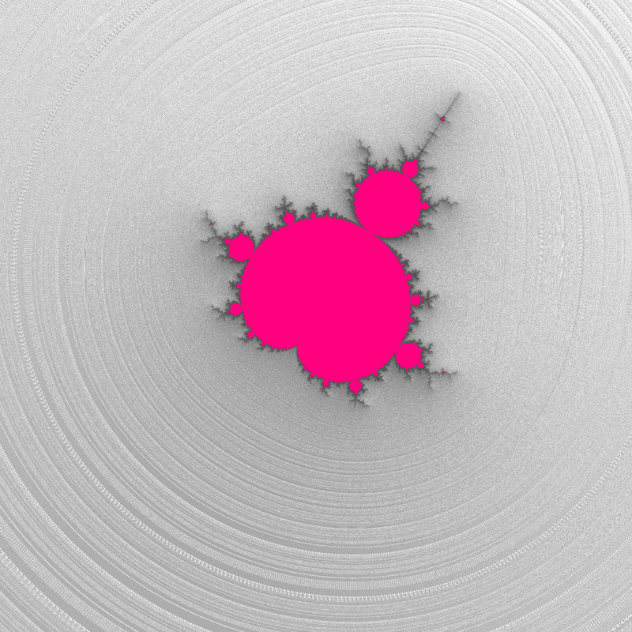

Note
Click here to download the full example code
23 - A deep mini
This is a simple showcase to demonstrate the acceleration provided by interior detection option for very deep minis.
This example also uses the ‘antialisasing’ option to avoid moire effect.
Reference:
fractalshades.models.Perturbation_mandelbrot

import os
import typing
import numpy as np
import mpmath
from PyQt6 import QtGui
import fractalshades as fs
import fractalshades.models as fsm
import fractalshades.gui as fsgui
import fractalshades.colors as fscolors
from fractalshades.postproc import (
Postproc_batch,
Continuous_iter_pp,
DEM_normal_pp,
Fieldlines_pp,
DEM_pp,
Raw_pp,
)
from fractalshades.colors.layers import (
Color_layer,
Bool_layer,
Normal_map_layer,
Grey_layer,
Virtual_layer,
Blinn_lighting,
Overlay_mode
)
def plot(plot_dir):
#>>>>>>>>>>>>>>>>>>>>>>>>>>>>>>>>>>>>>>>>>>>>>>>>>>>>>>>>>>>>>>>>>>>>>>>>>>
# Parameters
#>>>>>>>>>>>>>>>>>>>>>>>>>>>>>>>>>>>>>>>>>>>>>>>>>>>>>>>>>>>>>>>>>>>>>>>>>>
fractal = fsm.Perturbation_mandelbrot(plot_dir)
calc_name = 'test'
_1 = 'Zoom parameters'
x = '-1.999966194450370304184346885063505796755312415407248515117619229448015842423426843813761297788689138122870464065609498643538105757447721664856724960928039200970806596464697897247034380275662515774719795646696735873798312804539648952681115225456179242935106837745884878805854902169393836872097394050590046057699087967010196239765406551942511353248935870676912381954206583589473663772650104637785419392949872755058895530738089740079985776336454731048155381424443368009147832298545439060874543314328347318610344753331544040936498231198149727109'
y = '0.0000000000000000000000000000000003001382436790938324072497303977592498734683119077333527017425728012047497561482358118564729928841407551922418650497818162547584808406226419681319987510966551024915920858367060072851094384239104512934585936736294083320495556911255641034741860247735534144716575799510702390797404223208558592193988956228128312647425358021104123150623316403610610181133505002078608735365638116235012859863602970282687765675758728641685358330772131661136113532338021950485899263595349420350880557330865130440135716258565997502285180701052571648187007997490077027'
dx = '5.06722630e-433'
xy_ratio = 1.0
theta_deg = 0.0
dps = 550
nx = 3200
antialiasing = True
_2 = 'Calculation parameters'
max_iter = 400000000
M_divergence = 100.0
interior_detect = True
epsilon_stationnary = 0.001
_3 = 'Bilinear series parameters'
use_BLA = True
eps = 1e-06
_4 = 'Plotting parameters: base field'
base_layer = 'continuous_iter'
interior_mask = 'all'
interior_color = (1.0, 0.0, 0.49803921580314636)
colormap = fs.colors.Fractal_colormap(
colors=[[1. , 1. , 1. ],
[0.39215687, 0.39215687, 0.39215687],
[0.39215687, 0.39215687, 0.39215687],
[0.39215687, 0.39215687, 0.39215687]],
kinds=['Lch', 'Lch', 'Lch', 'Lch'],
grad_npts=[32, 32, 32, 3],
grad_funcs=['x', 'x', 'x', 'x'],
extent='mirror'
)
invert_cmap = False
cmap_z_kind = 'relative'
zmin = 0.0
zmax = 0.66
_5 = 'Plotting parameters: shading'
shade_kind = 'glossy'
gloss_intensity = 10.0
light_angle_deg = 65.0
light_color = (1.0, 1.0, 1.0)
gloss_light_color = (1.0, 1.0, 1.0)
_6 = 'Plotting parameters: field lines'
field_kind = 'None'
n_iter = 3
swirl = 0.0
damping_ratio = 0.8
twin_intensity = 0.1
#>>>>>>>>>>>>>>>>>>>>>>>>>>>>>>>>>>>>>>>>>>>>>>>>>>>>>>>>>>>>>>>>>>>>>>>>>>
# Plotting function
#>>>>>>>>>>>>>>>>>>>>>>>>>>>>>>>>>>>>>>>>>>>>>>>>>>>>>>>>>>>>>>>>>>>>>>>>>>
def func(
fractal: fsm.Perturbation_mandelbrot=fractal,
calc_name: str=calc_name,
_1: fsgui.separator="Zoom parameters",
x: mpmath.mpf=x,
y: mpmath.mpf=y,
dx: mpmath.mpf=dx,
xy_ratio: float=xy_ratio,
theta_deg: float=theta_deg,
dps: int=dps,
nx: int=nx,
antialiasing: bool=False,
_2: fsgui.separator="Calculation parameters",
max_iter: int=max_iter,
M_divergence: float=M_divergence,
interior_detect: bool=interior_detect,
epsilon_stationnary: float=epsilon_stationnary,
_3: fsgui.separator="Bilinear series parameters",
use_BLA: bool=True,
eps: float=eps,
_4: fsgui.separator="Plotting parameters: base field",
base_layer: typing.Literal[
"continuous_iter",
"distance_estimation"
]=base_layer,
interior_mask: typing.Literal[
"all",
"not_diverging",
"dzndz_detection",
]="all",
interior_color: QtGui.QColor=(0.1, 0.1, 0.1),
colormap: fscolors.Fractal_colormap=colormap,
invert_cmap: bool=False,
cmap_z_kind: typing.Literal["relative", "absolute"]=cmap_z_kind,
zmin: float=zmin,
zmax: float=zmax,
_5: fsgui.separator="Plotting parameters: shading",
shade_kind: typing.Literal["None", "standard", "glossy"]=shade_kind,
gloss_intensity: float=10.,
light_angle_deg: float=65.,
light_color: QtGui.QColor=(1.0, 1.0, 1.0),
gloss_light_color: QtGui.QColor=(1.0, 1.0, 1.0),
_6: fsgui.separator="Plotting parameters: field lines",
field_kind: typing.Literal["None", "overlay", "twin"]=field_kind,
n_iter: int=3,
swirl: float=0.,
damping_ratio: float=0.8,
twin_intensity: float=0.1
):
fractal.zoom(
precision=dps,
x=x,
y=y,
dx=dx,
nx=nx,
xy_ratio=xy_ratio,
theta_deg=theta_deg,
projection="cartesian",
antialiasing=antialiasing
)
if use_BLA:
BLA_params={"eps": eps}
else:
BLA_params = None
fractal.calc_std_div(
calc_name=calc_name,
subset=None,
max_iter=max_iter,
M_divergence=M_divergence,
epsilon_stationnary=epsilon_stationnary,
SA_params=None,
BLA_params=BLA_params,
interior_detect=interior_detect,
)
if fractal.res_available():
print("RES AVAILABLE, no compute")
else:
print("RES NOT AVAILABLE, clean-up")
fractal.clean_up(calc_name)
fractal.run()
pp = Postproc_batch(fractal, calc_name)
if base_layer == "continuous_iter":
pp.add_postproc(base_layer, Continuous_iter_pp())
elif base_layer == "distance_estimation":
pp.add_postproc("continuous_iter", Continuous_iter_pp())
pp.add_postproc(base_layer, DEM_pp())
if field_kind != "None":
pp.add_postproc(
"fieldlines",
Fieldlines_pp(n_iter, swirl, damping_ratio)
)
interior_func = {
"all": lambda x: x != 1,
"not_diverging": lambda x: x == 0,
"dzndz_detection": lambda x: x == 2,
}[interior_mask]
pp.add_postproc("interior", Raw_pp("stop_reason", func=interior_func))
if shade_kind != "None":
pp.add_postproc("DEM_map", DEM_normal_pp(kind="potential"))
plotter = fs.Fractal_plotter(pp)
plotter.add_layer(Bool_layer("interior", output=False))
if field_kind == "twin":
plotter.add_layer(Virtual_layer(
"fieldlines", func=None, output=False
))
elif field_kind == "overlay":
plotter.add_layer(Grey_layer(
"fieldlines", func=None, output=False
))
if shade_kind != "None":
plotter.add_layer(Normal_map_layer(
"DEM_map", max_slope=60, output=False
))
if base_layer != 'continuous_iter':
plotter.add_layer(
Virtual_layer("continuous_iter", func=None, output=False)
)
sign = {False: 1., True: -1.}[invert_cmap]
plotter.add_layer(Color_layer(
base_layer,
func=lambda x: sign * np.log(x),
colormap=colormap,
probes_z=[zmin, zmax],
probes_kind=cmap_z_kind,
output=True))
plotter[base_layer].set_mask(
plotter["interior"], mask_color=interior_color
)
if field_kind == "twin":
plotter[base_layer].set_twin_field(plotter["fieldlines"],
twin_intensity)
elif field_kind == "overlay":
overlay_mode = Overlay_mode("tint_or_shade", pegtop=1.0)
plotter[base_layer].overlay(plotter["fieldlines"], overlay_mode)
if shade_kind != "None":
light = Blinn_lighting(0.4, np.array([1., 1., 1.]))
light.add_light_source(
k_diffuse=0.8,
k_specular=.0,
shininess=350.,
angles=(light_angle_deg, 20.),
coords=None,
color=np.array(light_color))
if shade_kind == "glossy":
light.add_light_source(
k_diffuse=0.2,
k_specular=gloss_intensity,
shininess=1400.,
angles=(light_angle_deg, 20.),
coords=None,
color=np.array(gloss_light_color))
plotter[base_layer].shade(plotter["DEM_map"], light)
plotter.plot()
#>>>>>>>>>>>>>>>>>>>>>>>>>>>>>>>>>>>>>>>>>>>>>>>>>>>>>>>>>>>>>>>>>>>>>>>>>>
# Plotting call
#>>>>>>>>>>>>>>>>>>>>>>>>>>>>>>>>>>>>>>>>>>>>>>>>>>>>>>>>>>>>>>>>>>>>>>>>>>
func(fractal,
calc_name,
_1,
x,
y,
dx,
xy_ratio,
theta_deg,
dps,
nx,
antialiasing,
_2,
max_iter,
M_divergence,
interior_detect,
epsilon_stationnary,
_3,
use_BLA,
eps,
_4,
base_layer,
interior_mask,
interior_color,
colormap,
invert_cmap,
cmap_z_kind,
zmin,
zmax,
_5,
shade_kind,
gloss_intensity,
light_angle_deg,
light_color,
gloss_light_color,
_6,
field_kind,
n_iter,
swirl,
damping_ratio,
twin_intensity
)
if __name__ == "__main__":
# Some magic to get the directory for plotting: with a name that matches
# the file or a temporary dir if we are building the documentation
try:
realpath = os.path.realpath(__file__)
plot_dir = os.path.splitext(realpath)[0]
plot(plot_dir)
except NameError:
import tempfile
with tempfile.TemporaryDirectory() as plot_dir:
fs.utils.exec_no_output(plot, plot_dir)
Total running time of the script: ( 9 minutes 30.870 seconds)